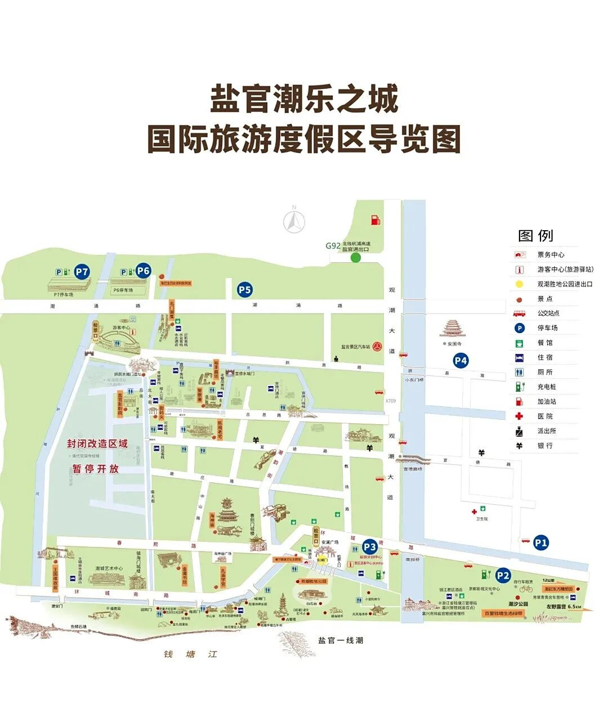
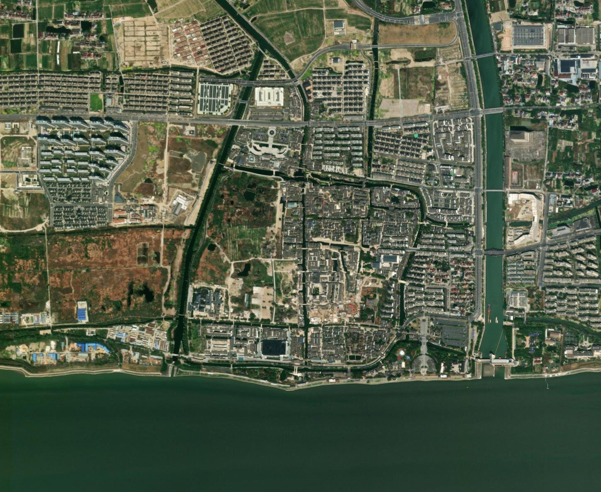

盐官潮乐之城 · 导览图与卫星图对照
点任意编号，两张图会同时标出同一处参照。可以先认水系和过河位置，再找游客服务中心。
活动导览图


同一片区域的卫星影像


导览图是示意图，两张图比例不同，编号标的是地物参照位置。卫星图采用 Web Mercator 显示。景区代表点影像元数据显示 2025 年 3 月 23 日、0.5 米，具体入口、停车场现况、临时管制和馆内空间需要当届资料。
点任意编号，两张图会同时标出同一处参照。可以先认水系和过河位置，再找游客服务中心。


导览图是示意图，两张图比例不同，编号标的是地物参照位置。卫星图采用 Web Mercator 显示。景区代表点影像元数据显示 2025 年 3 月 23 日、0.5 米，具体入口、停车场现况、临时管制和馆内空间需要当届资料。